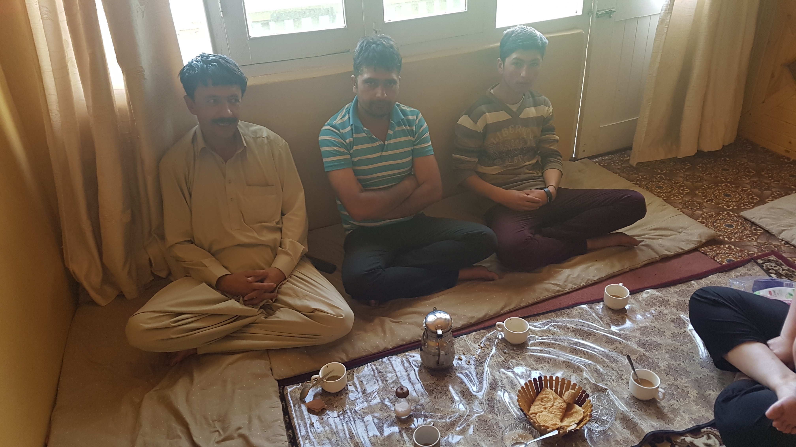
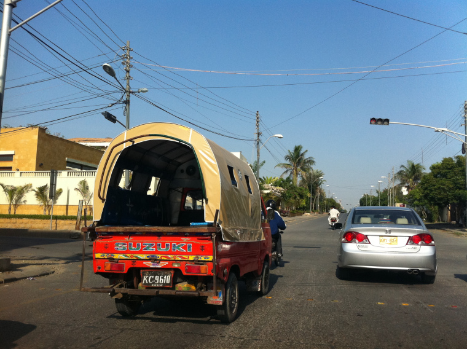
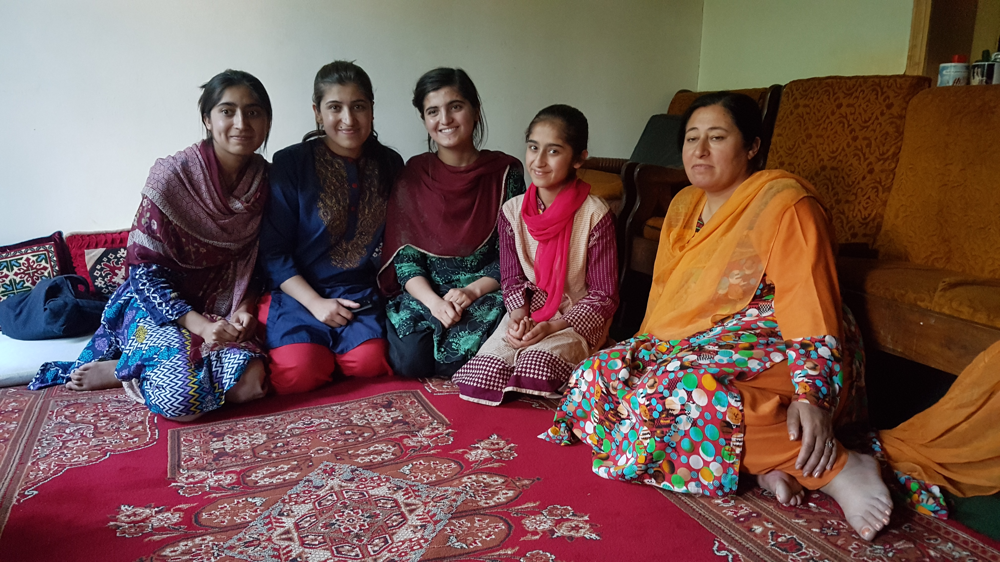

우연히 들렀던 초등학교에서 주인공이 되다.
2017년 05월 25일
파키스탄
어제 저녁에 새벽 6시에서 7시 사이에 온수샤워를 할수 있다는 이야기를 듣고 일찍 일어났다. 물온도를 확인해 봤지만 차가웠다. 그래도 리셉션에 말을 하면 따듯한 물을 만들어줄 수 있다고 해서 가지 아저씨에게 이야기 했다. 훈자는 특이하게 전기나 태양열로 온수를 만들지 않고 장작불로 물을 뎁힌다. 그래서 온수 사용이 쉽지 않은것 같다.
가지 아저씨가 온수를 만들어준다고 해서 나는 첫번째로 샤워를 하러 들어갔다. 그런데 아무리 기다려도 온수는 나오지 않았다. 물은 빙하물이라 엄청나가 차가웠다. 인간이 샤워를 할수 없는 온도였다. 일단 머리는 그나마 찬물로 감을 수 있기 때문에 대충 감는데 성공했다. 머리를 감은 이후로도 아무리 기다려도 온수는 나오지 않았다. 그래서 고민했다. 그냥 몸을 닦고 밖에서 기다릴지 아니면 찬물로 샤워를 할지. 그러다가 그냥 찬물로 한번 샤워해보자는 생각을 했다. 미친듯이 차가운물이었지만 그동안 여행자의 몸으로 변했는지 생각보다 견딜만 했다.
샤워를 마치고 나오는데 기분이 너무 좋았다. 지난번 텐트를 직접 들고 트래킹 했을때, 라호르에서 단수때 생수통을 사서 샤워를 했을때 처럼 또 한번의 자유로움이 느껴졌다. 이제는 앞으로 어떤 물에서도 샤워를 할 수 있을것 같다는 생각이 들었다. 이제보니 그동안 문명과 기술의 도움을 받아서 할 수 있었던일들을 최대한 도움을 받지 않고 해냈을때 엄청난 기쁨을 느낀다는 사실을 깨달았다. 나는 문명과 기술의 발전을 위한 도구 만드는 사람이라고 스스로를 규정했지만 아이러니 하게도 그것들을 벗어났을때 진정한 자유로움을 느꼈다.
J와 S는 아래층에서 긴급상황에서 사용할 수 있는 가스 온수샤워를 마쳤다. 그들은 아마 이 찬물에서 샤워를 할 수 없었을 것이다. 너무 물이 차가워서 그랬는지 샤워를 마치고 손등의 감각이 이상했다. 지난번 래프팅을 마치고 느꼈던 저체온의 증상이 살짝 느껴졌다. 뜨거운 물을 구하러 리셉션에 갔는데 다들 아침식사중이었다. 근데 그들이 이쪽으로 오라고 한다. 같이 식사하자고 해서 그들에게 아침식사를 얻어먹었다. 여기서 묶는 것이 호텔에서 묶는것 같지 않고 홈스테잉 하는 느낌이다. 아침부터 따듯한 호의를 받으니 기분이 좋았다.

같이 식사를 했던 잌발, 가지, 페이셜. 오늘 아침 식사 알족과 피티라는 파키스탄 전통 빵이라고 한다.
오늘 우리 계획은 알리마바드 시내에 내려가서 필요한 물건도 이것저것 구매하고 ATM에 가서 현금을 뽑는것이 목적이었다. 첫날 알리마바드에서 훈자까지 택시비 250에 왔었다. 알리마바드와 훈자를 왕복할 때마다 그렇게 비싼 비용을 지불해서 다닐 수는 없었다. 그리고 분명 현지인들이 이용하는 교통수단이 있을것 같았다. 가지 아저씨에게 물어봤더니 스즈키를 타면 된다고 한다. 회사 이름이 고유명사가 된 사례다.

파키스탄의 대중교통 수단인 미니버스, 스즈키로 불린다. 출처
가격이 무척 저렴하다. 알리 아마드까지 30루피라고 한다. 한 20분에 한대씩 다니는데 충분히 기다릴 수 있었다. 스즈키를 타고 한 10분 정도를 이동해서 도착했다. 먼저 ATM에가서 현금을 뽑았다. 최대 20000까지 뽑을 수 있고 ATM에 따라서 200~250 루피의 출금 수수료가 나왔다. 그리고 근처 식당에 들어갔다. 확실히 훈자보다 다양한 음식을 먹을 수 있는것 같았다. 고기가 먹고 싶어서 치킨 Pulo 를 시켰다. S와 J는 치킨 텐더가 들어았는 음식을 시켰는데 엄청 맛있었다. 나중에 또 와서 먹어야겠다. 식사를 마치고 아이스크림을 먹었다.

아이스크림 가게에서 만났던 두 청년, 나를 계속 쳐다보면서 웃길래 인사했더니 영어를 전혀 못하는것 같았다. 대화는 할 수 없었지만 오늘 찍은 가장 멋졌던 사진.
알리아바드는 모든것을 갖추고 있었다. 나는 J가 들고온 전기포트로 음식과 커피를 직접 해먹으며 비용을 절감할 수 있다는 사실을 알게 되었다. 나도 그런 물건이 필요함을 느꼈다. 루마니아인 라즈가 추천해준 물건을 사용하면 무게도 가볍다. 작은 돼지꼬리 히터와 열에 강한 플라스틱 큰 컵을 구매하면 된다. 혹시 있을까 해서 찾아봤는데 진짜 있었다. 돼지꼬리 히터는 너무 커서 구매할 수 없었지만 플라스틱 컵과 스푼은 구할 수 있었다. 조금 더 찾아보면 작은 돼지꼬리가 있을것같았다. 다 사람사는 곳이다. 필요한것이 있으면 현지에서 모두 구할 수 있는것 같다. 한국에서 패키징 해온 물건들에 빠진것이 있다고 실망할 필요가 없다.
WIFI만 키면 폰이 계속 재부팅이 된다. 아무래도 핸드폰이 고장난것 같다. 더이상 WIFI를 킬 수가 없었다. 그래서 현지 유심카드를 구매하기로 했다. 유심 가게도 알리아바드에 있어서 들어가 봤는데 카드를 구매하려면 길깃 까지 가야한다고 한다. 길깃은 여기서 두시간 정도 걸리니 나중에 한번 다녀와야 겠다. 빠른 통신사 두개를 알아왔다. Ufone 과 zong 유심카드를 구매하면 된다. 두개다 파키스탄 전 지역에서 사용가능하고 빠르다고 한다.
밖에 있는데 파란색 교복을 입은 학생들이 우르르 나왔다. 한 학생에게 다가가서 물어봤다. 근처에 학교가 있나보다. 갑자기 학교에 방문해보고 싶었다. 파키스탄 학교는 어떤 모습일지 어떻게 수업을할지 궁금했다. 학교가 근처에 있다고 해서 우리는 학교에 방문해 보기로 했다. 학교로 가는 길에 두 학생이 있었다. 그 친구들에게 인사하고 학교 구경좀 시켜줄 수 없냐고 했더니 알겠다고 한다. 신이 났다. 이런것이 진짜 나만의 여행이라는 생각이 들었다. 갑자기 학교에 가고 싶어서 가다가 현지인의 도움을 받게 된다니 내가 원하던 이상적인 여행의 모습이었다.
우리가 도착 한 곳은 Hunza public school이었다. 문을 살짝 열었는데 수많은 학생들과 어른들이 있었다. 갑자기 들어갈까 말까 고민됐지만 용기를 내서 안으로 입장했다. 전부다 우리를 처다 봤다. 뻘쭘하게 서있을 뻔한 시간도 없이 거기있던 선생님으로 보이는 분이 환영한다며 이쪽으로 오라고 한다. 우리는 본인들의 게스트라며 명당 자리로 앉도록 안내를 해주셨다. 나는 정말로 기뻤다. 그들의 환대 때문인것은 당연하고, 우연히 학교에 들른것 뿐인데 앞으로 엄청나게 재미있는 일들이 일어날것 같았기 때문이다.
지금까지 내가 느끼는 파키스탄은 정말 최고의 사람들이 있는 나라다. 그리고 여행지로써 최고의 나라다. 이렇게 사람들에게 환대를 받고 도움을 받는데 세상 누가 싫어 할 수 있을까? 사람들의 환대와 친절함은 아무리 무미건조하고 평범한 나라라고 하더라도 180도 다른 멋진 여행지로 만드는것 같다. 나는 이곳 훈자가 경치도 물론 좋지만 그런경치는 인도와 네팔 에서도 많이 봤었다. 훈자가 좋은 진짜 이유는 바로 사람들 때문인것 같다. 여행을 떠나기전 대용이형의 조언처럼, 현지인의 틈 속으로 깊숙히 들어가보는것. 이것이 남들이 경험하지 못하는 진짜 나만의 여행을 만드는 것이다.
Hunza public school은 3~4살부터 23~24살까지 모든 학생들이 있는 학교였다. 오늘은 방과후 활동인 sport weekend가 있었는데 흥미롭게도 태권도 시범도 있었다. 모든 태권도 시범이 한국말로 이루어졌는데 너무 신기했다. 우연히 들린 이곳에서 한국말을 듣게 되다니?! 시범을 보이는 학생들 수준이 너무 뛰어나서 놀랐다. 약 한시간 가량 태권도 시범을 관람하며 주변에 있던 어른들과 대화도 하고 학생들과 사진도 찍고 이야기 했다. 그 동안 듣기 좋은 비트의 로컬 음악이 나와서 가수이름을 알아내기도 했다. (yoyo honey singah)
시범이 모두 끝나고 코치가 우리를 시범대로 데려와서 설명을 해줬다. 아마도 우리가 태권도 종주국 사람들이어서 그랬을것이다. 너무 재미있었다. 알고보니 모두 유소년 태권도 선수였고 전국적으로 메달을 딴 선수들이었다. 동메달부터 금메달까지 단 한명도 메달이 없는 친구가 없었다. ㄷㄷ
태권도 시범 중. 너무 잘해서 덩달아 나도 너무 신났다.
우리에게 호기심을 많이 보였던 학생들
우리를 보며 즐거워하고 부끄러워하던 친구들.
단체사진도 찍었다.
우리에겐 광광지일 뿐인 훈자, 이곳에는 그들만의 삶이 있었다.
나는 이 학교에서 엄청난 활기와 에너지를 느꼈다. 숙박시설과 레스토랑과 기념품 가게만 즐비한 여행지에서는 볼 수 없었던 모습이었다. 흥미롭다. 내게 세상의 변두리 지역으로 느껴지는 곳에서 현지인을 만날때마다, 이들의 삶은 재미가 있을까? 하는 의문이 들었었다. 우리는 이곳에서 즐기지만 그들은 그저 여행자를 상대하기만 하는것처럼 보였기 때문일까. 그런 생각들이 현지인의 틈으로 깊숙이 들어가면 들어갈 수록 잘못된 것임을 느끼게 된다. 우리에겐 관광지일 뿐인 훈자 주민들에게는 그들만의 삶이 이곳에 있었다. 생각해보면 내가 살고 있는 동네도 외국인이 보기에는 그렇게 느껴질것 같았다. 내가 살고 있는 동네는 외국인이 보기에 중심부가 아닌 외각에 있는 그저그런 평범한 장소이기 때문이다.
이슬람 문화에서 들을 수 있는 음악이 들렸다. 알고보니 무슬림 사람들이 행사전에 읊는 쿠란 경전이었다. 음악인줄알았는데 소리가 너무 아름다웠다. 한국에 있을때는 이슬람 문화의 콧소리 같은 전통 노랫소리가 듣기 거북했는데 점점 아름답게 느껴진다. 무슬림 사람들은 모든 행사를 시작하기 전에 이런 경전을 읽는 시간을 갖는다고 한다. 이름은 Tilawat 라고 부른다고 한다.
정해진 길에서 약간만 벗어난 시도를 하면 상상치도 못한 재미있는 일들이 일어난다. 오늘 교복입은 학생에게 근처에 학교가 있는지 물어봤던일이 이렇게 즐거운 사건을 만들줄 예상이나 했겠는가. 분명이것은 나비효과다. 아주 작은 차이를 가진 초기 조건이 최종적으로 막대한 차이의 결과를 가져오는것이다. 인간의 관계도 수많은 분자를 가진 기체와 같이 결정론적인 물리학으로 예측이 불가능하다. 입자 하나하나는 예측할 수 있으나 그들이 모인 공기는 변수가 워낙 많아서 예측이 불가능한것이다. 인간의 관계도 마찬가지 인것 같다는 생각이 들었다.
내가 무슨일을 하던간에 삶의 여정은 계속 흘러간다. 그냥 흘러가는대로 몸을 맞기는것도 좋다. 안전하기 때문이다. 하지만 가끔씩은 그런 반복되는 삶을 벗어나려는 약간의 시도가 필요함을 느낀다. 그 시도는 생각치도 못한 사건들을 만들고 내게 삶의 즐거움과 만족감을 준다. 흘러 가는 방향에서 조금씩 벗어나려는 시도. 앞으로 평생을 이렇게 살면 얼마나 재미있는 일들이 많이 일어날까. 내 앞으로의 삶이 정말 기대된다.
파키스탄 이후 "여행지"에 대한 많은 생각들이 바뀌었다. 여행 전, 파키스탄은 위험한 나라라는 막연한 생각을 가지고 있었다. 특히 여행을 많이하는 여행자들 사이에서도 그렇게 인식되고 있을 정도였다. 하지만 막상 직접 경험해본 파키스탄은 정 반대였다. 지금까지 여행했던 그 어떤 여행지보다 안전하게 느껴졌고, 어떤 나라보다 사람들이 친절했다. 도저히 위험한 나라라고 느낄 수가 없었다. 사람들 사이에 퍼져있는 고정관념들이 하나의 나라를 이렇게 다른 나라로 만든다는 사실이 무척 이상하게 느껴졌다.
J와의 대화를 통해 북한을 여행한 사람들에대해 들었다. 한국인이 아닌 외국인들은 종종 북한을 여행 할 수 있나보다. 어떤 대만 친구는 평양을 여행했는데 사람들이 너무 친절하고 좋아서 또 가고 싶다고 했다고 한다. 이것도 고정관념이었다. 북한은 절대 여행이 불가능한 고립된 지역이라는 생각이 있었다. 하지만 파키스탄 처럼 막상 가보면 정말 다른 북한의 모습을 볼 수 있지 않을까? 나도 언젠가는 북한을 여행할 수 있을까? 대한민국 사람으로써 지금은 불가능하지만 언젠가는 북한도 여행해보는 상상을 해봤다.
미디어와 사람들이 인식이 만든 가상의 이미지를 걷어내는 것이 정말 중요함을 느꼈다. 그 가상의 이미지는 실제의 모습과는 너무나도 달랐다. 그것은 여행지 뿐만이 아니다. 막연한 인식으로 사람들이 두려워하는 모든것들을 실제로 경험하면 분명 다른 모습을 발견할 수 있을것이다. 한가지 떠오른 것은 미국 취업이다. 많은 사람들이 인식으로는 미국 취업이 어렵다고 하지만 막상 부딛쳐 보면 생각보다 쉽게 해낼 수도 있지 않을까? 이번 여행이 끝나면 나도 한번 도전해 보고 싶다는 생각이 자꾸 든다. 무슨 도전인들 못하겠나. 도전을 가로막고 있는 가상의 이미지만 걷어내면 된다. 이 여행을 통해 나는 점점 자신감이 생기고 있다.
현지인 가정에 초대 받다.
한가지 또 즐거운 사건이 생겼다. 행사가 마무리 되었을때, 학교에서 옆에 있었던 한 선생님이 우리를 집에 초대하고 싶다는 것이다. 우리는 흔쾌히 초대를 수락하고 학교를 떠나 집으로 향했다. 현지인 집에 항상 가보고 싶었는데 드디어 그럴 수있는 기회가 생겨서 기뻤다.
도착한 집은 상당히 좋았다. 우리는 수박 과 쥬스를 얻어먹었다. 5명의 딸이 그 집에 있었고 그들과 2시간 정도 대화를 했다. 첫째 딸은 파키스탄에서 가장 좋은 대학을 나와 현재 치과 의사로 알리 마바드에서 근무하고 있다고 한다. 그의 대학 졸업사진도 구경시켜줬고, 또 형제의 결혼식 사진과 문화도 구경시켜줬다. 한번은 파키스탄의 안좋은 점이 궁금하다고 했다. 더 개선할 점이 있는지 궁금하다고 했다. 그런데 아무리 생각해도 파키스탄 사람들에게서 않좋은 점을 발견할 수 가 없었다. 정말로!
파키스탄에 와서 이슬람 문화에 많은 관심이 생겨서 이것저것 많이 물어봤다. 이슬람 종교를 따르는 사람을 무슬림이라고 부르는것도 이제야 알았다. 이슬람은 휴머니즘을 최고로 강조하는 종교라고 한다. 평등과 선함을 중요시 한다고 한다. 그들도 사람들이 이슬람에 대해 오해를 갖고있는것을 잘 알고있었다. 이슬람과 테러리즘이 서로 연관되어 있다는 고정관념이었다. 하지만 전혀 그렇지가 않다는 사실을 다시한번 확신하게 되었다. 테러리즘은 이슬람이 아니라 극단 주의자들이 저지르는 불행일 뿐이다. 그리고 무슬림들은 타 종교에 대해서 존중하고 또 존경한다고 한다. 타 종교를 배척하고 교화의 대상으로 삼는 한국의 교회들이 부끄럽게 느껴졌다.
나는 이슬람 문화에 대해 너무 무지했다는 생각이 들었다. 앞으로 한국에 돌아가서? 혹은 여행중에 이슬람에 관련된 책도 읽어보고 공부도 해봐야겠다고 생각했다. 특히 서구 기독교 문화와 이슬람 문화의 관계에 대해 깊은 관심이 생겼다. 그리고 탈레반과 IS라는 극단주의자들은 어떻게 만들어진것인지도 궁금했다. 서구 사회가 만들어놓은 이슬람 = 적 이라는 고정관념도 어떻게 탄생했는지 궁금하다.
나는 갑자기 코란이 궁금해졌다. 그들에게 코란을 구경시켜줄 수 없냐고 물었더니 알겠다고 한다. 그리고 곧 그들이 코란을 가져오는데 책을 엄청나게 소중히 들고오는 모습에 깊은 인상을 받았다. 우리는 성경책을 아무렇게나 바닥에 놓고 사용하는데 이들에게 경전은 가장 소중한 보물이었던 것이다. 나는 이슬람이 가르치는 평화와 선 그리고 휴머니즘이 어떨지 무척 궁금했다. 나중에 코란을 한번 읽어보고 싶다. (성경책도 완독 못해봤는데 코란을 읽어보고 싶다는 생각이 들었다는게 웃겼다)
시간이 벌써 7시가 다되어가서 떠날 시간이 되었다. 그들은 여기서 하루 묶어도 좋다고 했다. 그리고 훈자를 떠나기 전에 한번 더 오라고 했다. 정말 훈자를 떠나기 전에 한번 이집에서 홈스테이를 하고 싶다. 즐거울것 같다. 첫째딸과 페이스북 아이디를 공유한뒤 우리는 아쉬움을 뒤로 한채 떠났다.
학교 이름 ag khan higher secondary school karimabad

우리를 초대했던 가족의 모습

치과 의사인 첫째딸.

아름다운 파키스탄의 색감과 무늬.
돌아오는길에 꼬치 구이집이 있었다. 너무 맛있어보여서 자동으로 발길이 닿았다. 무척 짰지만 나는 맛있었다. 고기는 항상 옳다. 고기를 먹을때면 너무 행복하다. 그렇게 저녁을 간단하게 먹고 내일 아침에 먹을 야채와 과일도 구매했다. 그러는 사이에 어두워졌고 우리는 돌아갈 시간이 되었다. (어두워져도 전혀 위험하지 않다) 30루피 짜리 스즈키가 더이상 운행을 하지 않는다는 사실을 알게 되었다. 그런 와중에도 나는 몇몇 전자 가게에 들러서 돼지꼬리가 있는지 물어봤다. 모두 없었다. 그리고 물어보는 김에 카리마바드행 스즈키가 더이상 없는지 재차 물었다.
진짜 없었다. 우리는 결국 택시를 탈지, 히치하이킹을 시도할지 고민하고 있었다. 그 때 갑자기 어떤 아저씨가 버스를 태워준다고 한다. 결국 우리 숙소까지 무료로 아저씨가 버스를 태워줬다. 파키스탄 사람들 정말 감동의 연속이다.ㅜ 버스안에는 버스의 오너 아저씨들도 같이 있었는데 라호르에서 알라마바드까지 이 밴을 타고 왔다고 한다. 딱봐도 부자 아저씨들 같았다. 그리고 한국에서 할랄음식 비즈니스를 한다고 한다. 신기했다. 본인 동생들이 한국에서 할랄음식 레스토랑을 운영한다고한다. 나중에 서울에가서 꼭 가봐야겠다.
버스를 타고 가면서 한가지 밝혀진 사실은 이들은 우리가 가는 카리마바드가 목적지가 아니었다는 사실이다. 알리 마바드가 목적지였는데 순전히 우리를 위해서 숙소까지 이동해주는 거였다. 나는 오늘 보는 사람마다 주는 친절에 정말 연타로 얻어 터지는 기분이었다. 그렇게 짧은 시간이었지만 우리는 친구가 되었다. (여기 파키스탄에서는 모든 현지인과 1분이면 친구가 될 수있다.) 그리고 사진을 찍고 헤어졌다.
우리를 데려다 주었던 진짜 착한 아저씨들.
버스에서 내려 숙소로 돌아오는 길, 짜이아저씨 아미르를 만났다! 그리고 녹차를 또 얻어먹었다.! 오늘 도데체 몇번의 호의를 받는건지.. 엄청난 하루다. 나중에 한국에 돌아가서 파키스탄 사람을 만나면 정말 반가울것 같다. 그리고 엄청 잘해주겠다는 다짐을 한다.
 짜이 아저씨 아미르와 그 옆가게 주인 알리. 둘이 30년 지기 친구라고 한다. 고등학교를 졸업하고 이 가게를 열어 26년동안 운영했다고 한다. 대단..
짜이 아저씨 아미르와 그 옆가게 주인 알리. 둘이 30년 지기 친구라고 한다. 고등학교를 졸업하고 이 가게를 열어 26년동안 운영했다고 한다. 대단..